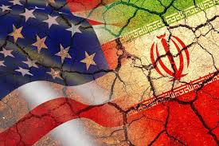

The 2026 Iran War represents one of the most significant military confrontations in modern Middle Eastern history. Beginning with Operation Epic Fury and Operation Roaring Lion, the coordinated US-Israel strikes against Iran have reshaped regional power dynamics, triggered a global oil crisis, and resulted in the assassination of Supreme Leader Ayatollah Ali Khamenei. This comprehensive Iran war timeline documents every critical phase of the conflict, from the initial February 28 strikes to the ongoing Strait of Hormuz crisis and the emergence of Mojtaba Khamenei as Iran's new Supreme Leader.
Understanding the Iran-Israel war timeline is essential for analysts tracking Middle East geopolitics, energy markets, and international security. With over 1,230 confirmed deaths in Iran, the sinking of the IRIS Fateh submarine, and missile attacks spanning from Tel Aviv to Dubai, this conflict has drawn in global powers including the United States, United Kingdom, France, and Gulf States. Our detailed analysis covers the military operations, key casualties, economic impacts, and the latest updates from this evolving war.

Visual timeline of US-Israel strikes and Iranian missile attacks across the Middle EastFebruary 28, 2026: Operation Epic Fury Begins
President Donald Trump authorized Operation Epic Fury from Air Force One at 3:38 p.m. EST, marking the official start of direct US military engagement in the Iran war [^16^]. Simultaneously, Israel launched Operation Roaring Lion, executing the largest combat sortie in Israeli Air Force history with over 200 fighter jets striking 500 military targets across western and central Iran [^16^].
The initial US-Israel strikes targeted Iran's nuclear facilities, ballistic missile sites, and military command centers. Key locations included Tehran's Pasteur Street district—home to the Supreme Leader's residence—the presidential palace, and the National Security Council headquarters [^16^]. The Israeli Air Force deployed over 1,200 bombs within the first 24 hours, while US forces utilized B-2 bombers, F/A-18s, F-35s, and Tomahawk cruise missiles to dismantle hardened ballistic missile facilities [^13^].
Within hours, Iranian state media confirmed that thousands of Islamic Revolutionary Guard Corps (IRGC) personnel had been killed or wounded, including several senior commanders [^16^]. The precision strikes represented a dramatic escalation from previous proxy conflicts, marking the first direct US-Israel military campaign against the Iranian regime's core infrastructure.
"The United States military began major combat operations in Iran to defend the American people by eliminating imminent threats from the Iranian regime. Tehran can never have a nuclear weapon." — President Donald Trump, February 28, 2026
March 1-3, 2026: Escalation and Khamenei Assassination
The second phase of the Iran war timeline saw unprecedented escalation as combined US-Israeli forces expanded operations to include decapitation strikes against Iran's leadership. On March 1, CENTCOM declared its mission to "dismantle the Iranian regime's security apparatus," targeting the Tehran Revolutionary Court, IRIB broadcasting headquarters, and the Thar-Allah Headquarters [^13^].
The most significant development occurred during this period: the assassination of Ayatollah Ali Khamenei. While Iranian authorities initially remained silent, anti-regime media and US intelligence confirmed that precision strikes on Khamenei's fortified compound on Pasteur Street resulted in his death, along with his wife Mansoureh Khojasteh Bagherzadeh [^14^] [^13^]. This decapitation strike triggered immediate succession concerns and marked a turning point in the conflict.
 Damage assessment in Tehran following the decapitation strikes on regime leadership
Damage assessment in Tehran following the decapitation strikes on regime leadership
By March 3, the Iranian Red Crescent Society reported 787 civilian deaths, while the US military achieved significant naval victories—sinking the IRIS Shahid Soleimani missile corvette and the IRIS Fateh submarine, Iran's only operational Fateh-class vessel [^13^]. The IDF also claimed destruction of 300 Iranian missile launchers and a covert nuclear site identified as Min Zadai [^13^].
The Iran war timeline triggered immediate global consequences. Oil prices surged as Iran threatened to close the Strait of Hormuz, affecting energy markets from Pakistan to Europe. The conflict's expansion beyond Israel to include strikes on Kuwait, Bahrain, and UAE targets created a regional security crisis with direct implications for South Asian trade routes and energy security.
March 4-6, 2026: Regional War Expansion
Phase three witnessed the Iran war expanding into a broader regional conflict. On March 4, Iran launched its most extensive missile campaign, targeting Bahrain, Kuwait, Saudi Arabia's Aramco refinery at Ras Tanura, and the Al Udeid Air Base in Qatar—described as the largest American base in the Middle East [^13^]. An 11-year-old girl was killed in Kuwait by shrapnel, while Qatar made history by shooting down two Iranian Su-24 bombers—the first manned Iranian aircraft downed in the conflict [^13^].
Hezbollah officially entered the war on March 2, declaring its rocket attacks on Haifa an "official declaration of war" in response to Khamenei's killing [^13^]. This triggered Israeli ground operations in southern Lebanon, marking the first land-based clashes of the conflict. By March 4, Israeli forces had advanced into Lebanese territory, engaging Hezbollah fighters in Khiam and Houla [^13^].
The economic warfare component intensified when Kuwait Petroleum Corporation and Qatar's BAPCO declared force majeure, cutting oil exports [^13^]. Turkey reported Iranian ballistic missiles entering its airspace, shot down by NATO defenses, while Cyprus closed Larnaca airspace due to suspicious Iranian drone activity [^13^].
March 7-10, 2026: Infrastructure Destruction and Command Elimination
The fourth phase focused on systematic dismantling of Iran's military-industrial complex and internal security apparatus. On March 7, US and Israeli strikes destroyed 16 Quds Force aircraft at Tehran's Mehrabad International Airport and targeted fuel storage facilities across the capital [^13^]. The US approved a $151 million arms sale to Israel while deploying a third aircraft carrier, the USS George H.W. Bush, to the region [^13^].
By March 10, the combined force had executed a comprehensive decapitation campaign against Iran's command structure. Confirmed kills included Armed Forces General Staff Basij chief Asadollah Badfar, IRGC Mohammad Rasoul Ollah Unit Commander Brigadier General Hassan Hassanzadeh, AFGS Logistics head Brigadier General Hassan Ali Tajik, and numerous other senior commanders [^12^]. The IDF reported striking the Shahid Hemmat Industrial Group—responsible for Iran's liquid-fueled ballistic missile production—and chemical industry complexes in Qom Province [^12^].
Internal security institutions faced systematic destruction. The combined force struck Law Enforcement Command (LEC) Special Forces Units, Basij compounds, and Intelligence Ministry buildings in Tabriz, Ilam Province, and Kermanshah, effectively dismantling the regime's domestic suppression capabilities [^12^].
March 11-14, 2026: Strait of Hormuz Crisis and New Supreme Leader
The most recent phase of the Iran war timeline has focused on maritime warfare in the Persian Gulf and the emergence of new leadership. On March 11, Iranian missiles struck the bulk carrier Mayuree Naree in the Strait of Hormuz, while drones hit Dubai International Airport and fuel tanks at Oman's Port of Salalah, forcing suspension of operations [^13^].
The IRGC announced attacks against Camp Buehring in Kuwait, Naval Support Activity Bahrain, and Ali Al Salem Air Base, demonstrating Iran's continued missile capabilities despite weeks of intensive bombing [^13^]. Bulk carriers Star Gwyneth and One Majesty sustained damage near the Strait, while Iraqi oil terminals suspended operations following attacks on tankers Zefyros and Safesea Vishnu [^13^].
On March 12, Mojtaba Khamenei issued his first statement as Iran's new Supreme Leader, vowing to keep the Strait of Hormuz closed and warning regional countries to stop hosting US bases [^13^]. This succession—following his father's assassination—represents a critical development in the Iran war timeline, with analysts debating whether Mojtaba can maintain regime cohesion amid military defeat and economic collapse.